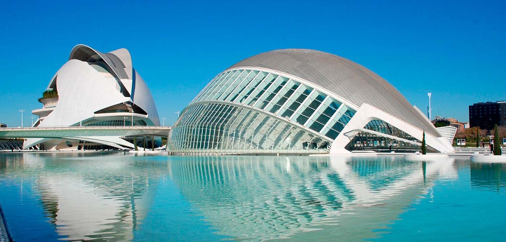
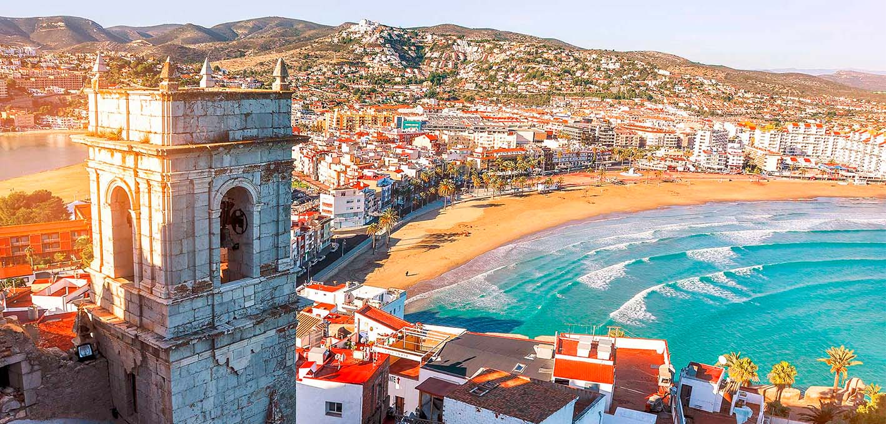
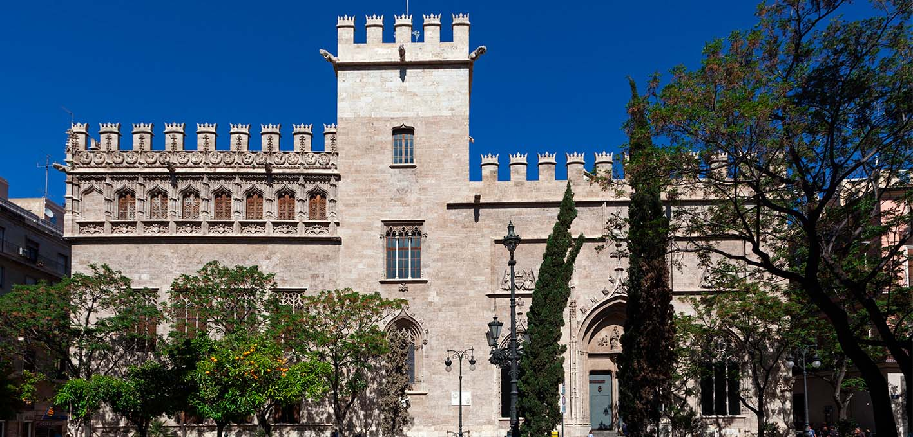
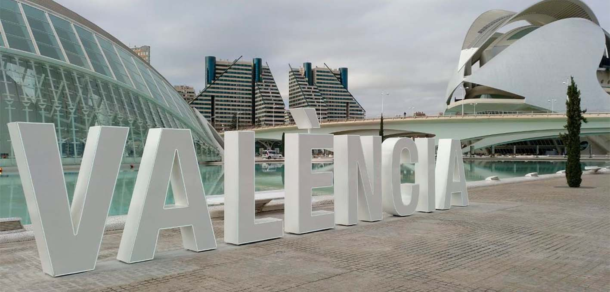
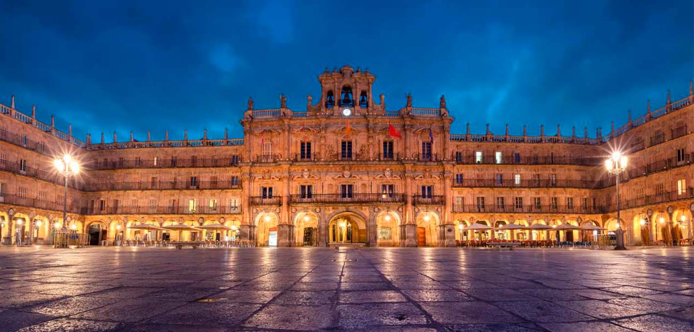
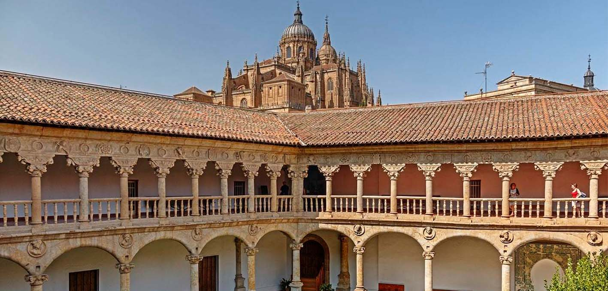
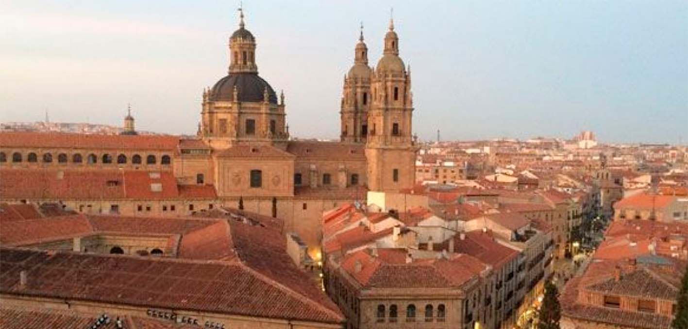
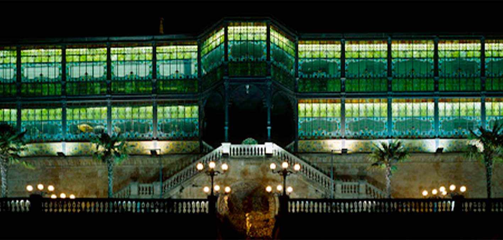

Información
Ávila es un municipio y ciudad española, capital de la provincia de Ávila, en la comunidad autónoma de Castilla y León. Se encuentra situada junto al curso del río Adaja y se trata de la capital de provincia más alta de España, a 1131 m sobre el nivel del mar, en virtud de lo cual en su casco urbano son relativamente frecuentes las nevadas durante el invierno. La ciudad presenta un clima mediterráneo continentalizado con matices montañosos. En 2018 su término municipal concentraba el 36,38 % del total de población de la provincia.
Tras la fundación romana y la asimilación de la población autóctona vetona de la zona —pues no existen indicios claros de un asentamiento prerromano en el casco histórico— la ciudad pasaría al poder visigodo. Ávila cayó, al igual que la mayor parte del territorio peninsular, bajo dominio musulmán a comienzos del siglo viii, y no sería reconquistada de forma definitiva por las tropas cristianas hasta el siglo xi. Experimentó un notable auge durante el siglo xvi, para verse posteriormente sumida en una prolongada crisis y declive hasta el siglo xix, en el cual la construcción del ferrocarril consiguió dar un empuje al desarrollo económico.
Ávila posee los títulos de «Ávila del Rey» —otorgado por Alfonso VII—, «Ávila de los Leales» —otorgado por Alfonso VIII— y «Ávila de los Caballeros» —otorgado por Alfonso X—, todos ellos presentes en la bandera de la ciudad. La seña de identidad es su muralla medieval completa, de estilo románico, destacando también otras construcciones representativas como la catedral del Salvador —cuyo cimorro se monta sobre la muralla— o la basílica de San Vicente. Ha sido considerada tradicionalmente como «ciudad de cantos y de santos»6 y su casco histórico medieval, en excelente estado de conservación, fue declarado Patrimonio de la Humanidad en 1985.
Qué ver
Valencia
Información
Valencia (en valenciano y oficialmente, València, es un municipio y una ciudad de España, capital de la provincia homónima y de la Comunidad Valenciana. Con una población de 801 545 habitantes (2020),9que sube a 1 581 057 habitantes (2020) si se incluye su espacio urbano, es la tercera ciudad y área metropolitana más poblada de España, por detrás de Madrid y Barcelona.
Valencia fue fundada por los romanos como colonia en el año 138 a. C., siendo cónsul Décimo Junio Bruto Galaico, y se denominó Valentia Edetanorum. Después de los períodos romano y visigodo, en el año 711, los musulmanes ocuparon la ciudad aportando su lengua, religión y costumbres, así como la implantación de sistemas de riego y la introducción de nuevos cultivos. En 1238 el rey cristiano Jaime I de Aragón reconquistó la ciudad, y repartió las tierras entre los nobles que le ayudaron a conquistarla, tal y como queda testimoniado en el Llibre del Repartiment, así como también creó una nueva ley para la ciudad, los Fueros de Valencia, los cuales se hicieron extensivos al resto del reino de Valencia. En el siglo xviii, Felipe V derogó los fueros como castigo al reino de Valencia por alinearse con los austracistas en la guerra de sucesión española. En 1982 se instituyó a Valencia como la capital de la actual Comunidad Valenciana, tal y como recoge el Estatuto de Autonomía.
La ciudad está situada a orillas del río Turia, en la costa levantina de la península ibérica, justo en el centro del golfo de Valencia, aunque en el momento que los romanos la fundaron, se encontraba en una isla fluvial del Turia, a unos cuatro kilómetros de distancia del mar. A unos diez kilómetros al sur de la ciudad se encuentra la Albufera de Valencia, la cual es propiedad del Ayuntamiento de Valencia desde 1911 cuando la compró a la Corona de España por 1 072 980,41 pesetas. La albufera es uno de los lagos más grandes de España, ya que tiene cerca de 2100 hectáreas de superficie, a las cuales hay que añadir una extensión de 14 100 hectáreas de marjal dedicadas al cultivo del arroz. Debido a su valor cultural, histórico y ecológico, fue el primer parque natural que declaró la Generalidad Valenciana, en 1986.
Qué ver
- 
- 
- 

- 
Salamanca
Información
Salamanca es un municipio y ciudad española, capital de la provincia homónima, situada en la comunidad autónoma de Castilla y León. Está ubicada en la comarca del Campo de Salamanca, en plena meseta Norte, en el cuadrante noroeste de la península ibérica. Tiene una población de 144 436 habitantes empadronados (INE, 2017). Su área funcional estable alcanza los 203 999 ciudadanos, lo que la convierte en la tercera más poblada de la comunidad, tras la de Valladolid y la de León.
Los orígenes de la urbe se remontan a hace unos 2700 años, durante la primera Edad de Hierro, cuando los primeros pobladores de la ciudad se asentaron en el cerro de San Vicente, a la ribera del Tormes. Desde entonces, la metrópoli ha sido testigo del paso de diversos pueblos: vacceos, vetones, romanos, visigodos y musulmanes. Raimundo de Borgoña, yerno del rey Alfonso VI de León, fue el encargado de repoblar la ciudad durante el Medievo y asentar las bases de la Salamanca actual.
Salamanca alberga la universidad, en activo, más antigua de España, la Universidad de Salamanca, fundada en 1218 por Alfonso IX de León sobre el germen de su estudio general, y que fue la primera de Europa que ostentó el título de universidad por real cédula de Alfonso X el Sabio con fecha de 9 de noviembre de 1252 y por la licentia ubique docendi del papa Alejandro IV de 1255. Durante la época en la que fue una de las universidades más prestigiosas de Occidente se hizo popular la frase «Quod natura non dat, Salmantica non præstat», ‘Lo que la naturaleza no da, Salamanca no presta’. Salamanca está ligada a la historia universal por nombres propios como Antonio de Nebrija, Cristóbal Colón, Fernando de Rojas, Francisco de Vitoria y la Escuela de Salamanca, fray Luis de León, Beatriz Galindo o Miguel de Unamuno.
Qué ver

- 
- 
- 
- 

Badajoz
Información
Badajoz es un municipio y ciudad española, capital de la provincia homónima, en la comunidad autónoma de Extremadura. Con una población de 150 984 habitantes (INE, 2020), es el municipio más poblado de Extremadura y el mayor centro económico y comercial de la comunidad autónoma extremeña. El río Guadiana surca la ciudad de este a oeste para después girar hacia el sur, donde hace de frontera con Portugal. En torno al 84,77 % de sus habitantes reside en el núcleo urbano; el resto está ubicado en diversas pedanías y núcleos dependientes.
Su término municipal, que hace frontera por el oeste con Portugal y que cuenta con una superficie de 1440,37 km²,6 es el de mayor extensión de la provincia y el tercero del país, tras Cáceres y Lorca. Además del núcleo urbano pacense, el municipio comprende otros nueve núcleos de población, entre ellos Gévora, Villafranco del Guadiana y Valdebótoa. En Bótoa se encuentra la Base Militar General Menacho, y a unos 30 km de allí por carretera, la Base Aérea de Talavera la Real, junto al aeropuerto de Badajoz.
La ciudad es sede de la Delegación del Gobierno de España en la comunidad autónoma de Extremadura, así como de la Subdelegación del Gobierno en la provincia, la Delegación de Defensa en Extremadura, la Diputación Provincial de Badajoz, la Audiencia Provincial de Badajoz, la Jefatura Superior de Policía de Extremadura, la Guardia Civil de Extremadura y de la Fiscalía Provincial de Badajoz. También es cabeza de su partido judicial y capital de su comarca (con antecedentes en 1594), siendo una de las dos principales sedes de la Archidiócesis de Mérida-Badajoz y ejerciendo de sede metropolitana de la Provincia Eclesiástica de Mérida-Badajoz (los Archivos Históricos y el Arzobispado se encuentran en Badajoz), y sede de su correspondiente vicaría episcopal. Es un importante enclave natural y ornitológico, ya que es la única ZEPA urbana del país
Qué ver
Sevilla
Información
Sevilla es un municipio y una ciudad de España, capital de la provincia homónima y de Andalucía. Contaba con 691 395 habitantes en 2020, por lo que es la ciudad más poblada de Andalucía, la cuarta de España después de Madrid, Barcelona y Valencia y la 32.ª de la Unión Europea. El municipio tiene una superficie de 140,8 km². El área metropolitana de Sevilla está compuesta por 46 municipios, incluye a una población de 1 548 741 habitantes (INE, 2020) y ocupa una superficie de 4905,04 km².
Su casco antiguo, con 3,9 km², es el más extenso de España y el sexto más grande de Europa, tras los de Roma (14,6 km²), Nápoles (10,3 km²), Venecia (7,6 km²), Florencia (5,5 km²), y Génova (4,1 km²). Sevilla es una de las ciudades con más monumentos catalogados en Europa. Su casco histórico es uno de los mayores de España (nótese la diferencia entre casco antiguo, que solo incluye la zona histórica anterior a la Revolución Industrial, y casco histórico, que abarca estadios posteriores). Su patrimonio histórico y monumental y sus diversos espacios escénicos y culturales la constituyen en ciudad receptora de turismo nacional e internacional. Es la tercera ciudad de España por número de visitantes, tras Barcelona y Madrid. Entre sus monumentos más representativos se encuentran la catedral (que incluye la Giralda), el Alcázar, el Archivo de Indias y la Torre del Oro, los tres primeros declarados Patrimonio de la Humanidad por la Unesco en 1987.
Es la única ciudad interior de España con puerto, situado a unos 90 km del océano Atlántico, pues el río Guadalquivir es navegable desde su desembocadura en Sanlúcar de Barrameda hasta la ciudad, aunque el tamaño de los barcos que acceden está limitado por una esclusa con un calado máximo de 8,5 m y el puente de circunvalación del Centenario limita el calado aéreo a 42 m.
Qué ver
Ourense
Información
Ourense es una ciudad y municipio español situado en el sureste de Galicia. Es la capital de la provincia de Orense y de la comarca homónima. Es el tercer municipio gallego por población después de Vigo y La Coruña, y el más poblado del interior de Galicia, con 105 233 habitantes según datos del INE en 2019.
La ciudad es atravesada por los ríos Miño, Barbaña y Lonia. Es conocida como “Ciudad de Las Burgas” debido a sus famosas fuentes de aguas termales, en las que el agua sale a temperaturas de entre 60 y 68 °C. Hay también aguas termales en el balneario de la Chavasqueira, O Tinteiro, Muíño da Veiga y Outariz.
Destacan como monumentos la catedral del siglo XII, con su Pórtico del Paraíso y el Santo Cristo, el puente mayor, el claustro de San Francisco, las iglesia de la Santísima Trinidad y Santo Domingo, y el conjunto de su zona antigua, en proceso de recuperación.